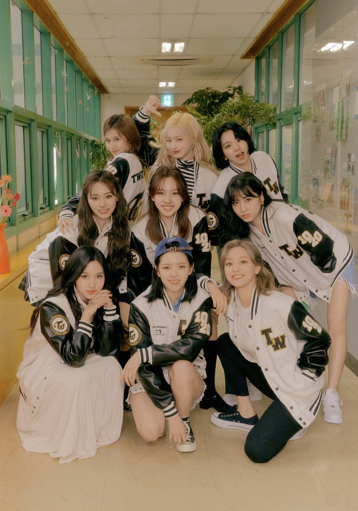

트와이스는 JYP엔터테인먼트에서 2015년에 선보인 9인조 걸그룹이다. 엠넷의 서바이벌 프로그램 SIXTEEN을 통해 나연, 정연, 모모, 사나, 지효, 미나, 다현, 채영, 쯔위(나이 순)가 선발되어 TWICE 멤버로 활동하고 있다. 데뷔년도부터 지금까지 많은 기록들을 세우고 있으며, K-POP을 대표하는 걸그룹 중 하나로 활동하고 있다.
TWICE의 멤버는 2015년 5월 5일부터 7월 7일까지 약 2달간 엠넷에서 방영된 서바이벌 프로그램 SIXTEEN에서 선발되었다. 원래 잠정적 정원은 7명이었으나, 여기서 박진영이 SIXTEEN 내내 아무 말도 없다가 마지막 화에 와서 메이저로 확정된 7명 외에 TWICE를 조금 더 완벽한 그룹으로 만들어 줄 멤버 두 명을 더 선정하겠다는 멘트를 날리며 엑스트라 카드로 쯔위(시청자 선정)와 모모(JYP 스탭 선정)를 선정해 총 9명이 되었다. 이와 관련하여 모모의 선발에 대한 형평성 논란이 일기도 했다.